example_allen_brain.Rmd
library(asapR)We have a convenient function to collapse cells in large .mtx file sets into a single matrix over much smaller pseudo-bulk samples.
ref.data <- fileset.list(data.dir %&% "/full")
data.info <- mmutil_info(ref.data$mtx)
.file <- temp.dir %&% "/bulk_results.rds"
if.needed(.file,{
.bulk <- asap_random_bulk_data_multi(ref.data$mtx,
ref.data$row,
ref.data$col,
ref.data$idx,
num_factors = 10,
NUM_THREADS = 16,
do_down_sample = TRUE,
save_rand_proj = TRUE,
CELL_PER_SAMPLE = 100,
verbose = FALSE)
saveRDS(.bulk,.file)
})
.bulk <- readRDS(.file)
annot.file <- data.dir %&% "/metadata.csv.gz"
annot.dt <- fread(annot.file)
annot.color <- annot.dt[, .(cell_type_alias_label, cell_type_alias_color)] %>%
unique() %>%
arrange(cell_type_alias_label) %>%
(function(x) x$cell_type_alias_color)
Q <-
as.data.table(apply(.bulk$rand.proj, 2, scale)) %>%
cbind(annot.dt[, .(class_label, cell_type_alias_label)])
.rand.vis <- sample(nrow(Q), 5000)
p1 <-
ggplot(Q[.rand.vis,], aes(V1, V2, color=class_label)) +
ggrastr::rasterize(geom_point(stroke=0)) +
theme(legend.position=c(0,1), legend.justification=c(0,1))
p2 <-
ggplot(Q[.rand.vis,], aes(V3, V4, color=class_label)) +
ggrastr::rasterize(geom_point(stroke=0)) +
theme(legend.position=c(0,1), legend.justification=c(0,1))
p3 <-
ggplot(Q[.rand.vis,], aes(V5, V6, color=class_label)) +
ggrastr::rasterize(geom_point(stroke=0)) +
theme(legend.position=c(0,1), legend.justification=c(0,1))
p4 <-
ggplot(Q[.rand.vis,], aes(V7, V8, color=class_label)) +
ggrastr::rasterize(geom_point(stroke=0)) +
theme(legend.position=c(0,1), legend.justification=c(0,1))
p5 <-
ggplot(Q[.rand.vis,], aes(V9, V10, color=class_label)) +
ggrastr::rasterize(geom_point(stroke=0)) +
theme(legend.position=c(0,1), legend.justification=c(0,1))
wrap_plots(p1, p2, p3, p4, p5, nrow=2)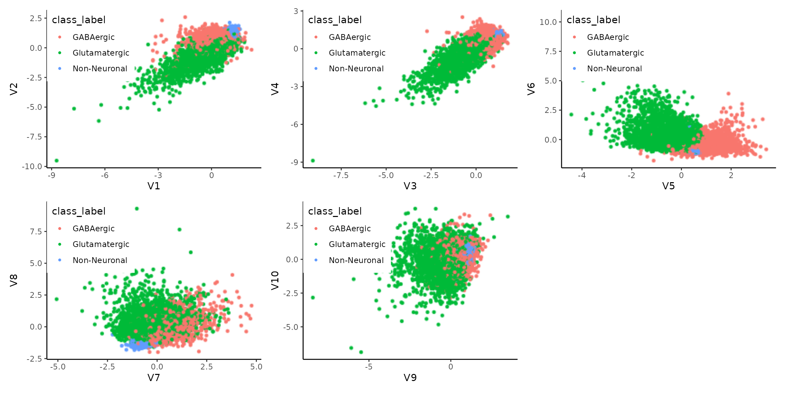
If the goal is to visualize high-dimensional vectors in lower-dimensional space, we can simply apply the projected 10-dimensional data to some embedding methods, such as t-SNE.
.tsne.rp <- run.tsne(.bulk$rand.proj, temp.dir %&% "/bulk_rp_tsne.rds")
.dt <- data.table(.tsne.rp) %>%
cbind(annot.dt[, .(class_label, cell_type_alias_label)])
ggplot(.dt, aes(V1, V2, color=cell_type_alias_label)) +
ggrastr::rasterize(geom_point(stroke=0, show.legend=F, size=.5)) +
scale_color_manual(values = annot.color) +
xlab("tSNE 1") + ylab("tSNE 2")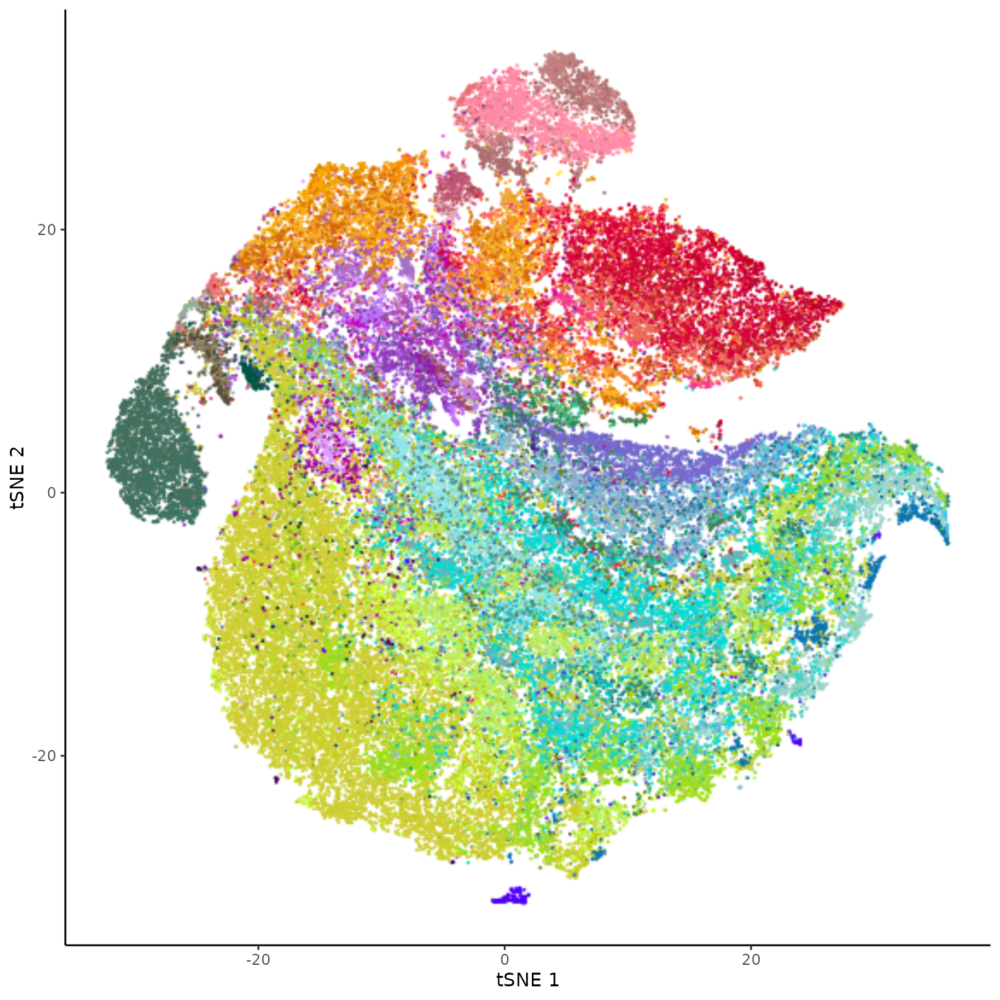
We can consolidate cells into pseudo-bulk samples based on these random projection results. We hope each consolidated pseudo-bulk sample contains nearly homogeneous cell populations.
hist(.bulk$size, 20)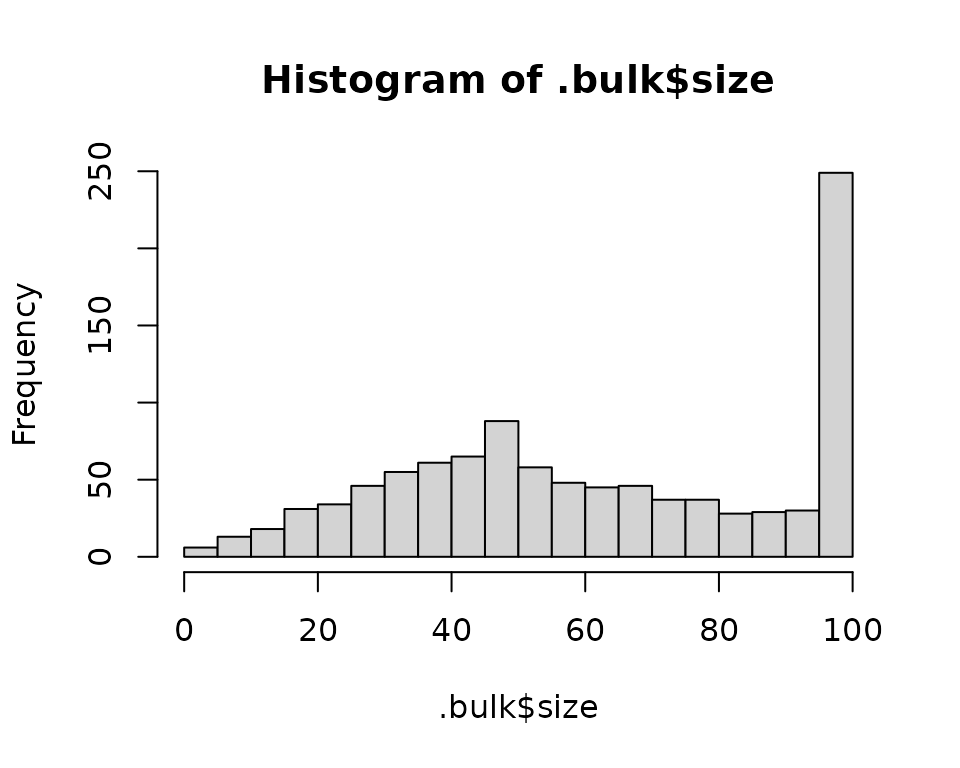 We allocated 64114 cells (down-sampled) into 1024 pseudo-bulk samples. A large fraction of the pseudo-bulk samples (237, 23 per cent) contain 100 cells.
We can drop small PB samples, depending on studies. Here, we discard bottom 5% samples to avoid unwanted stochastic samples. We take pseudo-bulk samples with at least 18 cells.
cutoff <- quantile(.bulk$size, .05)
Y <- .bulk$PB[, .bulk$size >= cutoff, drop = F]
Y <- stretch_matrix_columns(Y)*100
.show <- take.top(Y, 10)
y.show <- Y[.show, , drop=F]
heatmap(y.show, scale="none")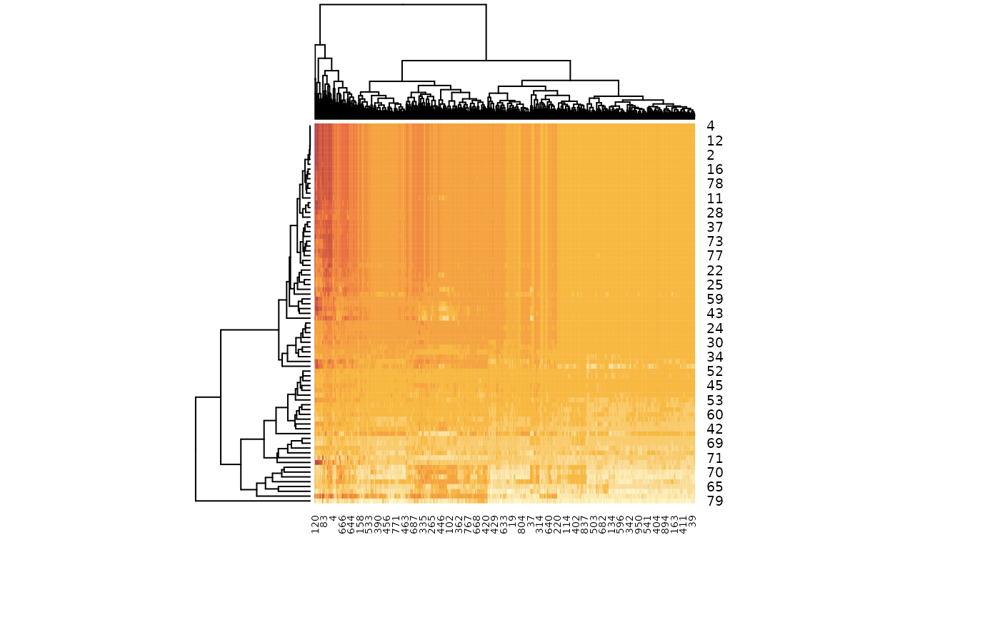
79 unique genes
974 unique samples
.pb.dt <-
data.table(pb = .bulk$positions, sample_name = .bulk$colnames) %>%
cbind(as.data.table(.tsne.rp)) %>%
left_join(annot.dt) %>%
filter(pb <= ncol(.bulk$PB)) %>%
as.data.table()## Joining with `by = join_by(sample_name)`
.pb.match <- .pb.dt[, .(nn = .N), by = .(pb, cell_type_alias_label)]
.dt.show <- .pb.match %>%
mutate(row = cell_type_alias_label, col = pb, weight = log1p(`nn`)) %>%
order.pair(ret.tab = TRUE)## Loading required package: tidyr
## Loading required package: cba
## Loading required package: grid
## Loading required package: proxy
##
## Attaching package: 'proxy'
##
## The following objects are masked from 'package:stats':
##
## as.dist, dist
##
## The following object is masked from 'package:base':
##
## as.matrix
ggplot(.dt.show, aes(`col`, `row`, fill = `weight`)) +
xlab(length(unique(.dt.show$pb)) %&% " pseudobulk samples") +
ylab(length(unique(.dt.show$cell_type_alias_label)) %&% " cell types (manual)") +
geom_tile() +
scale_fill_distiller("#cells", direction=1, label = function(x) round(pmax(exp(x)-1,0))) +
theme(axis.ticks = element_blank(), axis.text = element_blank()) +
theme(legend.key.width=unit(.2, "lines"))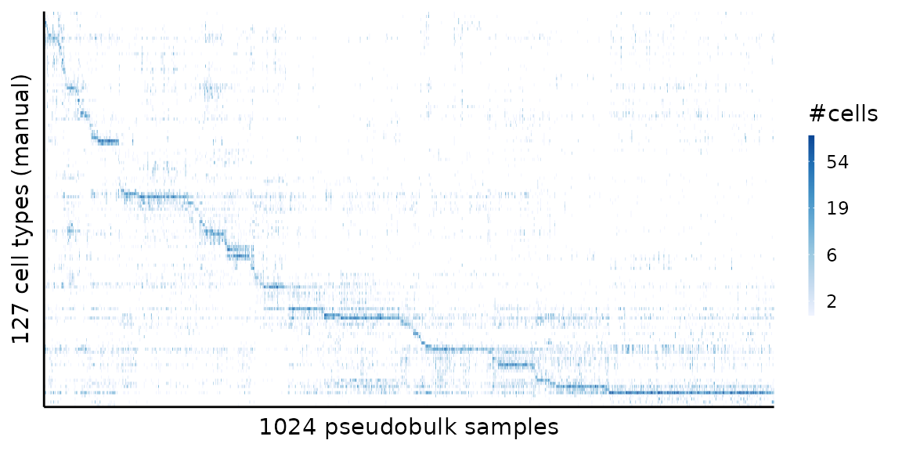
.file <- temp.dir %&% "/pb_nmf_results.rds"
if.needed(.file, {
.nmf <- asap_fit_nmf(Y, maxK = 30,
NUM_THREADS=16,
svd_init = TRUE,
a0 = 1, b0 = 1,
max_iter = 300)
saveRDS(.nmf, .file)
})
.nmf <- readRDS(.file)
heatmap(.nmf$model$theta)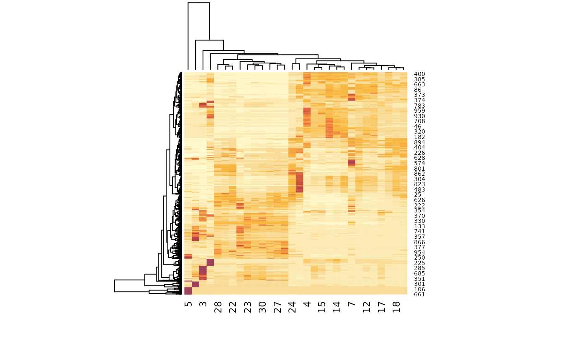
We can visualize the mixed topic membership of the pseudobulk samples in the following STRUCTURE plot.
.cols <- colorRampPalette(brewer.pal(8,"Paired"))(30)
.bulk.topic <- pmf2topic(.nmf$model$beta, .nmf$model$theta)
ggrastr::rasterise(plot.struct(.bulk.topic$prop), dpi=300) +
theme(legend.position = "none") +
theme(axis.text.x = element_blank()) +
theme(axis.ticks.x = element_blank()) +
scale_fill_manual("Topics", values = .cols) +
xlab("pseudobulk samples")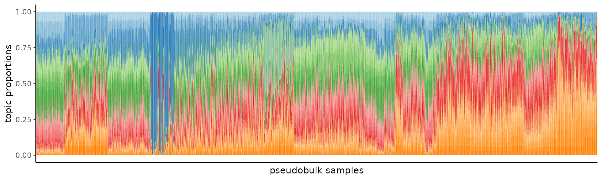
However, the structure plot is somewhat difficult to read with many colours. Instead, we can project proportions into a polar coordinate.
kk <- apply(.bulk.topic$prop, 1, which.max)
.polar <-
apply(project.proportions(.bulk.topic$prop), 2, scale) %>%
as.data.table() %>%
mutate(pb = 1:n(), kk = kk) %>%
as.data.table()
plot(.polar$xx, .polar$yy, col=kk, pch=(kk %% 25), xlab = "polar 1", ylab = " polar 2")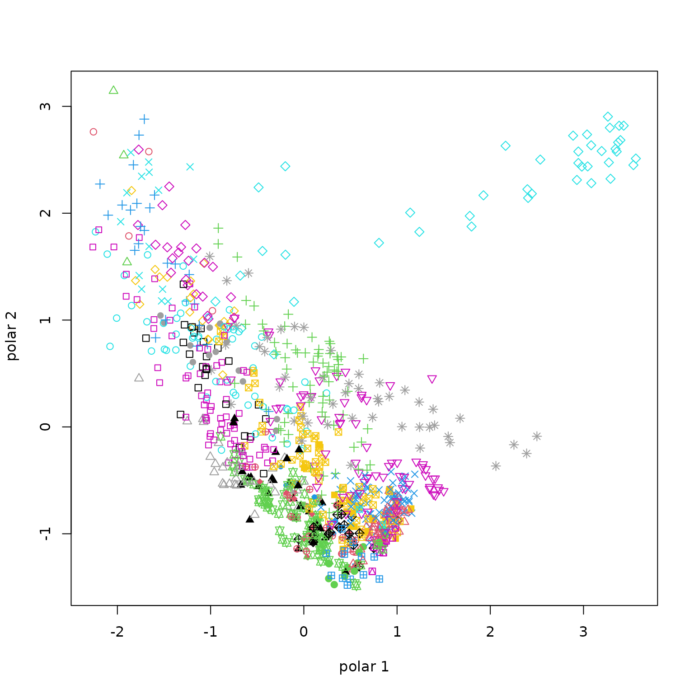
Additionally, we can apply tSNE to spread the points.
.tsne.polar <- run.tsne(as.matrix(.polar[, .(xx, yy)]), temp.dir %&% "/bulk_polar_tsne.rds")
.dt <- cbind(data.table(.tsne.polar), .polar)
.cols <- colorRampPalette(brewer.pal(8,"Paired"))(length(unique(.dt$kk)))
ggplot(.dt, aes(V1, V2, fill=as.factor(kk))) +
ggrastr::rasterize(geom_point(pch=21, stroke=.2, alpha=.7, show.legend=F, size=2)) +
scale_fill_manual(values=.cols) +
xlab("tSNE 1") + ylab("tSNE 2")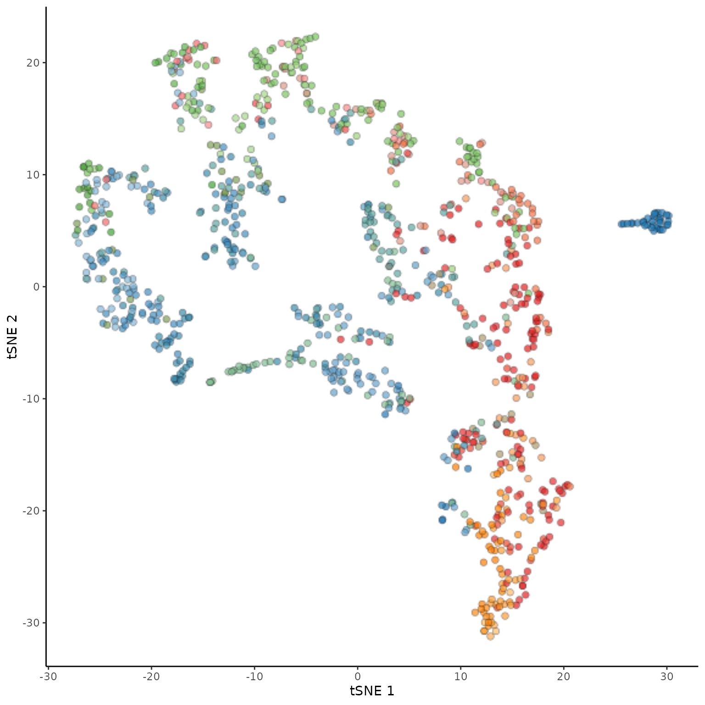
.file <- temp.dir %&% "/pb_stat_results.rds"
if.needed(.file, {
.stat <- asap_topic_stat(ref.data$mtx, ref.data$row, ref.data$col, ref.data$idx,
log_x = .nmf$std_log_x, .bulk$rownames, NUM_THREADS = 16)
saveRDS(.stat, .file)
})
.stat <- readRDS(.file)We can improve cell-level embedding results with the additional round of NMF and topic correlation analysis.
R <- apply(.stat$corr, 2, scale)
.tsne.corr <- run.tsne(R, temp.dir %&% "/stat_corr_tsne.rds")
.dt <- data.table(.tsne.corr) %>%
cbind(annot.dt[, .(class_label, cell_type_alias_label)])
ggplot(.dt, aes(V1, V2, color=cell_type_alias_label)) +
ggrastr::rasterize(geom_point(stroke=0, show.legend=F, size=.5)) +
scale_color_manual(values = annot.color) +
xlab("tSNE 1") + ylab("tSNE 2")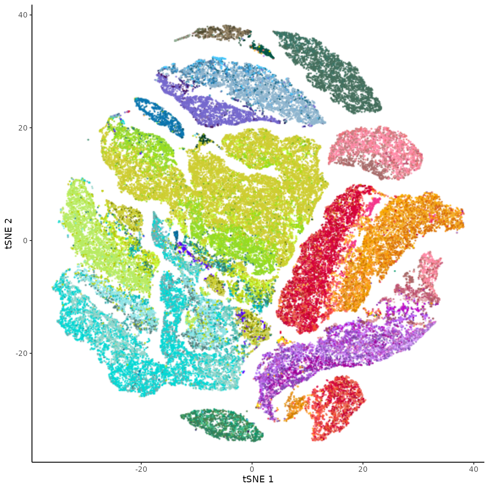
What about the topic proportions of these cells?
.pmf <- asap_topic_pmf(.nmf$model$beta, R, .stat$colsum)
.topic <- pmf2topic(.pmf$beta, .pmf$theta)
.dt <-
apply(project.proportions(.topic$prop), 2, scale) %>%
as.data.table() %>%
cbind(annot.dt[, .(class_label, cell_type_alias_label)])
ggplot(.dt, aes(xx, yy, color=cell_type_alias_label)) +
ggrastr::rasterize(geom_point(stroke=0, show.legend=F, size=.5)) +
scale_color_manual(values = annot.color) +
xlab("polar 1") + ylab("polar 2")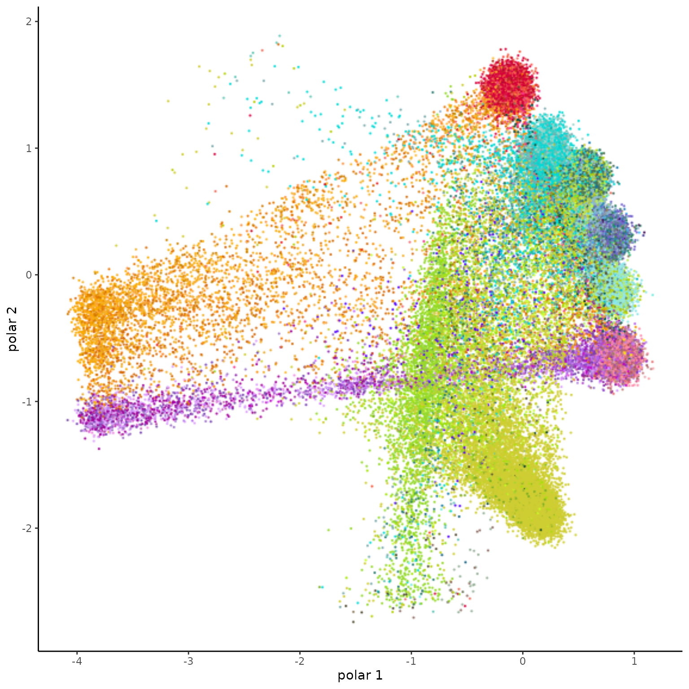
We may not need tSNE, but let’s see.
.polar <- apply(project.proportions(.topic$prop), 2, scale)
.tsne.polar <- run.tsne(.polar, temp.dir %&% "/cell_polar_tsne.rds")
.dt <- cbind(.tsne.polar, annot.dt[, .(class_label, cell_type_alias_label)])
ggplot(.dt, aes(V1, V2, color=cell_type_alias_label)) +
ggrastr::rasterize(geom_point(stroke=0, show.legend=F, size=.5)) +
scale_color_manual(values = annot.color) +
xlab("tSNE 1") + ylab("tSNE 2")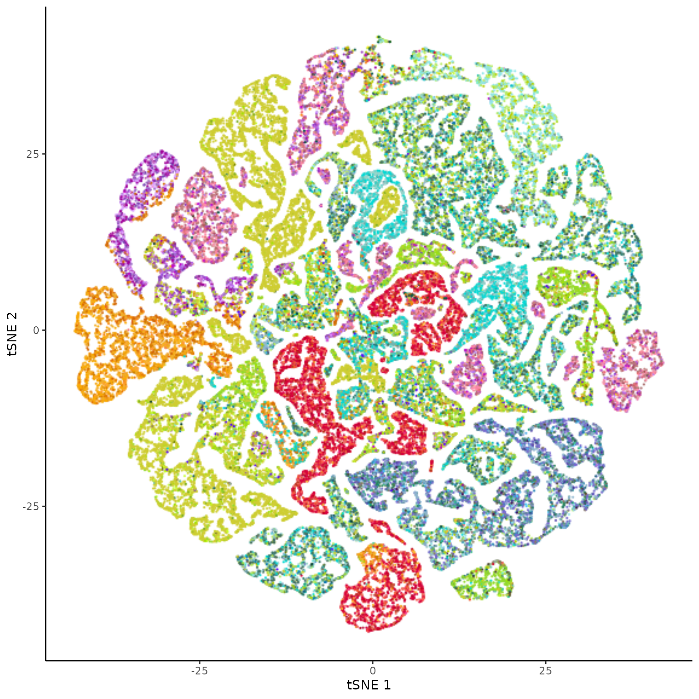